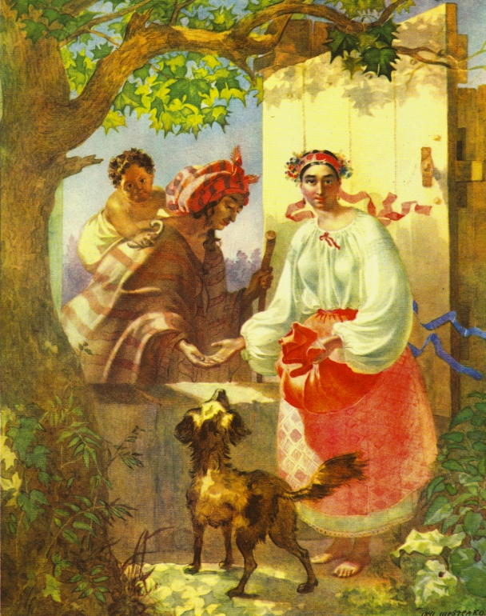
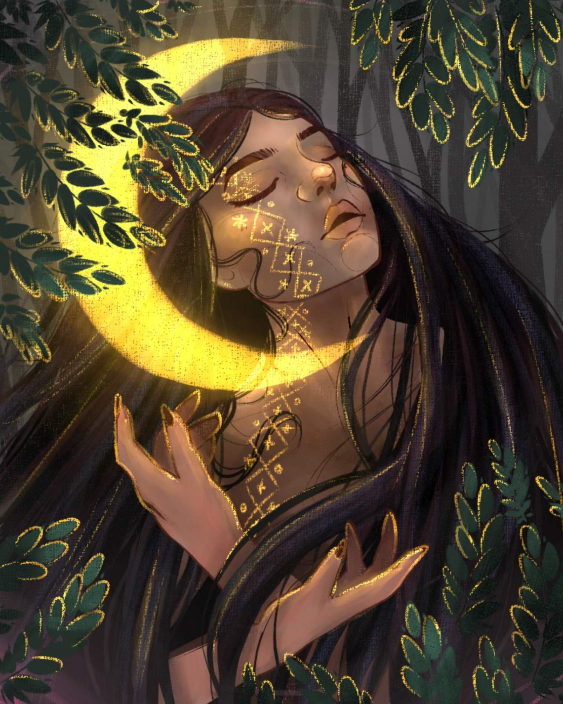
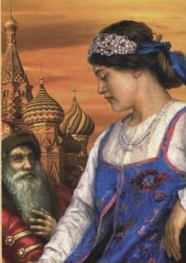
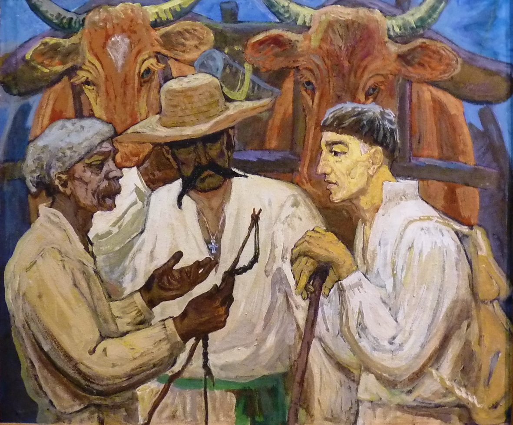
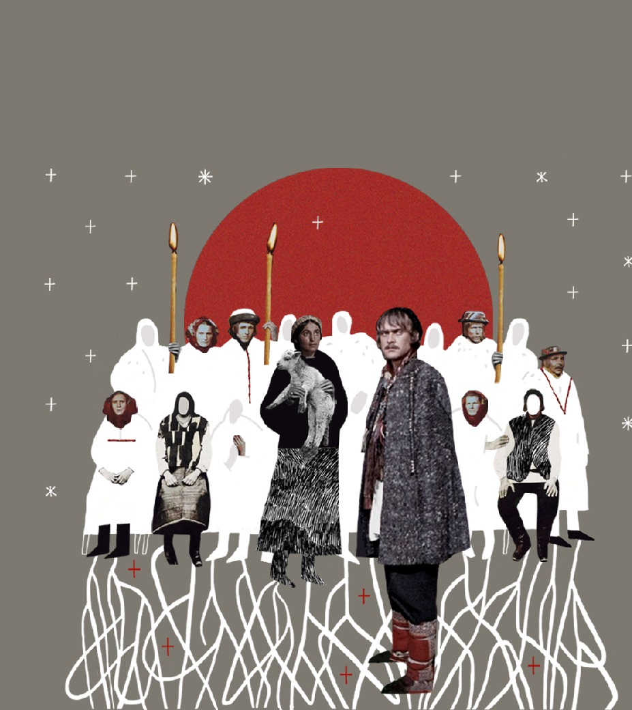

Народився 7 серпня 1819 року в містечку Воронежі Чернігівської губернії.
Навчався в Новгород-Сіверській гімназії.
З кінця 1830-х років Куліш — слухач лекцій у Київському університеті. Дістав посаду викладача в Луцькому дворянському училищі.
У Варшаві Куліша як члена Кирило-Мефодіївського товариства заарештовують і повертають до Петербурга.
У 1850-х повертається до Петербурга, де продовжує творити, хоча друкуватися деякий час він не мав права.
Куліш багато перекладає, особливо Шекспіра, Гете, Байрона, готує до видання в Женеві третю збірку поезій «Дзвін».
У змаганні знесиленого тіла з творчим духом і пішов Пантелеймон Куліш з життя 1897 року на своєму хуторі Мотронівка.

Григорій Квітка-Основ'яненко
Біографія
Народився 29 листопада 1778р. у селі Основа біля Харкова.
Здобув домашню освіту.
У 23 роки вступив до Курязького монастиря, але через чотири роки повернувся до світського життя.
Був комісаром у народному ополченні, повітовим предводителем дворянства (1817-28), згодом — головою Харківської палати кримінального суду.
Став активним діячем громадського і культурного життя Харкова.
Обирався членом Товариства наук при Харківському університеті.
Виступив одним із засновників Харківського професійного театру (з 1812 — його директор), Благодійного товариства (1812), Інституту шляхетних дівчат (1812), Харківської губернської бібліотеки (1838).
Свої перші твори друкував у журналі «Украинский Вестник», який видавав у 1816-17. Писав українською і російською мовами.
Помер Г. Квітка-Основ’яненко 20 серпня 1843 р. після тяжкої хвороби у м. Харкові.

Леся Українка
Біографія
Народилася 25 лютого 1871 в місті Новограді-Волинському.
Вчилася у приватних учителів. У 6 років почала вчитися вишивати.
6 січня 1880р. дуже застудилася, початок тяжкої хвороби.
Влітку 1883 року діагностували туберкульоз кісток, у жовтні цього ж року видалили кістки, уражені туберкульозом.
Починаючи з 1884 року Леся активно пише вірші («Конвалія», «Сафо», «Літо краснеє минуло» і ін.) і публікує їх у часописі «Зоря». Саме цього року з’явився псевдонім «Леся Українка».
Про рівень її освіти може свідчити факт, що у 19-літньому віці написала для своїх сестер підручник «Стародавня історія східних народів».
Побувавши 1891 в Галичині, а пізніше й на Буковині, Українка познайомилася з багатьма визначними діячами Західної України.
Історію кохання Лесі Українки часто розпочинають із Сергія Мержинського.
Вимушені потребою лікування подорожі до Німеччини, Італії, Єгипту, кількаразові перебування на Кавказі, Одещині, в Криму збагатили її враження та сприяли розширенню кругозору письменниці.
На початку березня 1907 року Леся Українка переїжджає з Колодяжного до Києва.
7 серпня 1907 р. Леся Українка та Климент Квітка офіційно оформили шлюб у церкві.
Останні роки життя Л. Косач-Квітки пройшли в подорожах на лікування до Єгипту й на Кавказ.
Померла 19 липня 1913 року в Сурамі у віці 42 років.

Микола Кастомаров
Біографія
Народився 4(16) травня 1817р. в слободі Юрасовці, тепер Ольховатського р-ну Вороніжської області в сім'ї російського поміщика, мати — українка з кріпаків.
Закінчив 1837р. історико-філологічний ф-т Харківського університету.
У 1845 — 46 рр. разом з М. Гулаком і В. Білозерським заснував Кирило-Мефодіївське братство, де брав активну участь у складанні програмних документів — "Книг буття українського народу", "Статуту Слов'янського товариства св. Кирила і Мефодія", відозв "До братів-українців", "До братів-росіян", "До братів-поляків"; автор записки про об'єднання слов'янських народів.
Весною 1847р. Костомарова арештовано.
З 1858р. жив у Петербурзі. В 1859 — 1862 рр. — екстраординарний професор кафедри російської історії Петербурзького університету. Влаштовував літературні "вівторки", куди сходилися земляки-українці (П. Куліш, О. Стороженко, В Горленко та ін.).
Брав діяльну участь у створенні журналу "Основа", у виробленні його національно-культурної програми. На початку 1862р. залишає працю в університеті і зосереджується на науковій роботі.
Помер Микола Костомаров 7(19) квітня 1885 року в Петербурзі.

Панас Мирний
Біографія
Народився 13 травня 1849 року в родині бухгалтера повітового казначейства в місті Миргороді на Полтавщині.
Після кількох років навчання в Миргородському парафіяльному, а потім у Гадяцькому повітовому училищі чотирнадцятилітній хлопець йде на роботу.
Чиновницька служба почалася в 1863 році в Гадяцькому повітовому суді.
Наступного року він переходить у повітове казначейство помічником бухгалтера, а згодом, після короткочасного перебування в Прилуках, займає цю ж посаду в Миргородському казначействі.
З 1871 року Панас Рудченко живе і працює в Полтаві, займаючи різні посади в місцевій казенній палаті.
Перші його твори (вірш «Україні» та оповідання «Лихий попутав»), підписані прибраним ім’ям Панас Мирний, з’явилися за кордоном, у львівському журналі «Правда» в 1872 році.
Ще 1875 року в співавторстві з братом Іваном Біликом було закінчено роботу над романом «Хіба ревуть воли, як ясла повні?» , в зв’язку з так званим Емським указом твір не був опублікований і вперше з’являється в Женеві у 1880 році.
Ще за молодих років він був зв’язаний з революційним визвольним рухом, з 1875 року брав участь у нелегальній роботі революційного гуртка «Унія».
Коли 1914 року було заборонено вшанування пам’яті Шевченка, письменник у відозві, написаній з цього приводу, висловлює глибокий протест і обурення діями російської влади.
Після встановлення Радянської влади в Україні Мирний, незважаючи на свій похилий вік, іде працювати в Полтавський губфінвідділ.
Помер Панас Мирний 28 січня 1920 року.

Михайло Коцюбинський
Біографія
Народився 17 вересня 1864 у Вінниці.
Віддали до початкової школи (1875 — 1876).
Після закінчення Шаргородської семінарії у 1880 р. Михайло Коцюбинський поїхав до Кам’янця-Подільського, маючи намір навчатися в університеті, але ця мрія не здійснилася.
Народився 17 вересня 1864 у Вінниці.
Віддали до початкової школи (1875 — 1876).
Після закінчення Шаргородської семінарії у 1880 р. Михайло Коцюбинський поїхав до Кам’янця-Подільського, маючи намір навчатися в університеті, але ця мрія не здійснилася.
У 1886–1889 він дає приватні уроки і продовжує навчатися самостійно, а 1891-го, склавши іспит екстерном при Вінницькому реальному училищі на народного учителя, працює репетитором.
Почав друкуватися в 1890 р. — львівській дитячій журнал «Дзвінок» опублікував його вірш «Наша хатка».
У 1892–1896 був у складі Одеської філоксерної комісії.
Потім працював у Криму.
Згодом переїхав у Чернігів, де займав посаду діловода при земській управі.
В Чернігові зустрів Віру Устимівну Дейшу, закохався, і вона стала його дружиною — вірним другом та помічником.
Постійні матеріальні нестатки, конфлікти з владою та ще постійна зажура долею коханої жінки, Олександри Іванівни Аплаксіної, молодшої за нього на 16 років. У 1907 р. з анонімного листа дружина дізналася про стосунки чоловіка з Аплаксіною та примусила його дати слово не кидати родину.
1911 р. «Товариство прихильників української науки і штуки» призначило довічну стипендію в розмірі 2000 крб. на рік, щоб він міг звільнитись зі служби.
Проте письменник почував себе дедалі гірше. Його мучили астма і туберкульоз.
Навесні 1913 р. Михайла Михайловича Коцюбинського не стало.